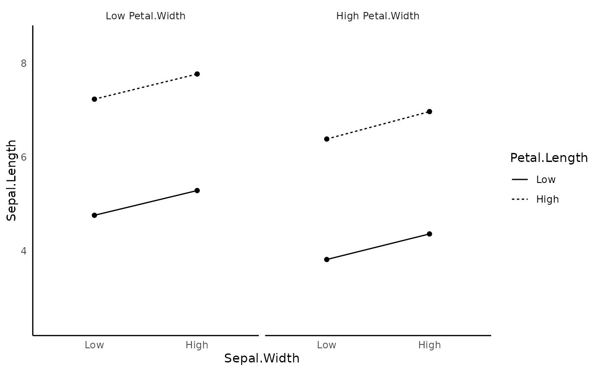

Three-way Interaction Plot
three_way_interaction_plot.Rd![[Experimental]](figures/lifecycle-experimental.svg)
The function creates a two-way interaction plot. It will creates a plot with ± 1 SD from the mean of the independent variable. See below for supported model
three_way_interaction_plot( model, cateogrical_var = NULL, graph_label_name = NULL, y_lim = NULL, plot_color = F )
Arguments
| model | lme, lmerMod, lmerModLmerTest object. |
|---|---|
| cateogrical_var | list. Specify the upper bound and lower bound directly instead of using ± 1 SD from the mean. Passed in the form of |
| graph_label_name | vector of length 3 or a switch function (see ?two_way_interaction_plot example). Vector should be passed in the form of c(response_var, predict_var1, predict_var2, predict_var3). |
| y_lim | vector of two number. set the y_lim of the plot |
| plot_color | logical. default as F. Set to T if you want to plot in color |
Value
ggplot object.
References
Moy, J. H. (2021). psycModel: Integrated Toolkit for Psychological Analysis and Modeling in R. R package. https://github.com/jasonmoy28/psycModel
Examples
fit <- lme_model( response_variable = JS_Individual, level_1_factors = c(Age_Individual, Education_Individual), level_2_factors = contains("Country"), three_way_interaction_factor = c( "Age_Individual", "Education_Individual", "Hofstede_IC_Country" ), id = Country, data = EWCS_2015_shorten )#> Fitting Model with lme: #> Fixed = JS_Individual ~ Age_Individual + Education_Individual + Hofstede_IC_Country + Hofstede_UA_Country + Hofstede_PD_Country + Hofstede_MF_Country + Hofstede_LO_Country + Hofstede_IR_Country + Age_Individual*Education_Individual*Hofstede_IC_Country #> Random = ~ 1 + Age_Individual + Education_Individual | Countrythree_way_interaction_plot(fit)three_way_interaction_plot(fit,plot_color = T) # plots with color